1942
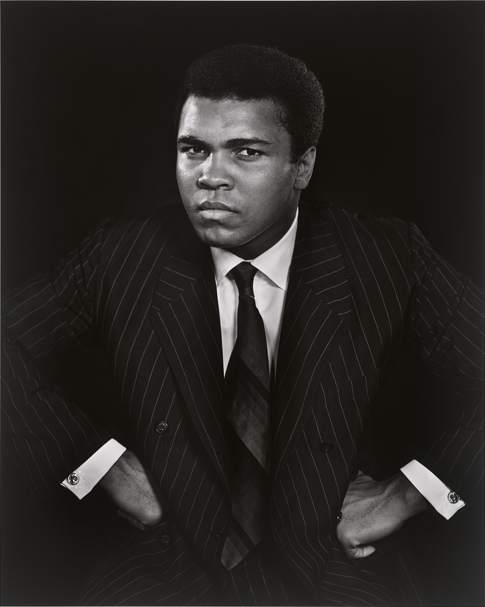Muhammad Ali by Yousuf Karsh, 1970.
Source: National Portrait Gallery
1954
(Formative years)
When he was 12, Clay’s bike was stolen. He reported it to the police, and Officer Joe Martin listened to the young man say he would beat up whoever had stolen his bike. Officer Martin answered, “You better learn how to fight first."
Gym bag used by Cassius Clay, 1960s.
Source: National Museum of African American History and Culture
Boxing headgear worn by Muhammad Ali, ca 1973.
Source: National Museum of African American History and Culture
1960
Martin, a leader in the Louisville civil rights movement, trained the young boxer for the next six years. In just six weeks Clay won his first fight.
Soon after in 1960, Clay, an 18-year-old light heavyweight, gives the United States its third gold medal in boxing after beating Zbigniew Pietrzykowski of Poland in the light-heavyweight final.
Training boxing gloves used and signed by Cassius Clay, 1960.
Source: National Museum of African American History and Culture
Muhammad Ali by Yousuf Karsh, 1970. Source: National Portrait Gallery
1960-1969
1961
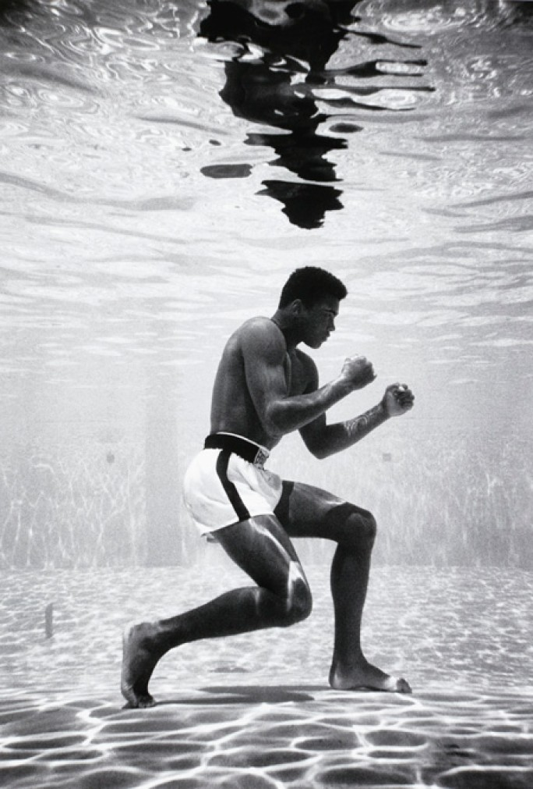Muhammad Ali by Filip Schulke, 1961
Source: National Portrait Gallery
1962
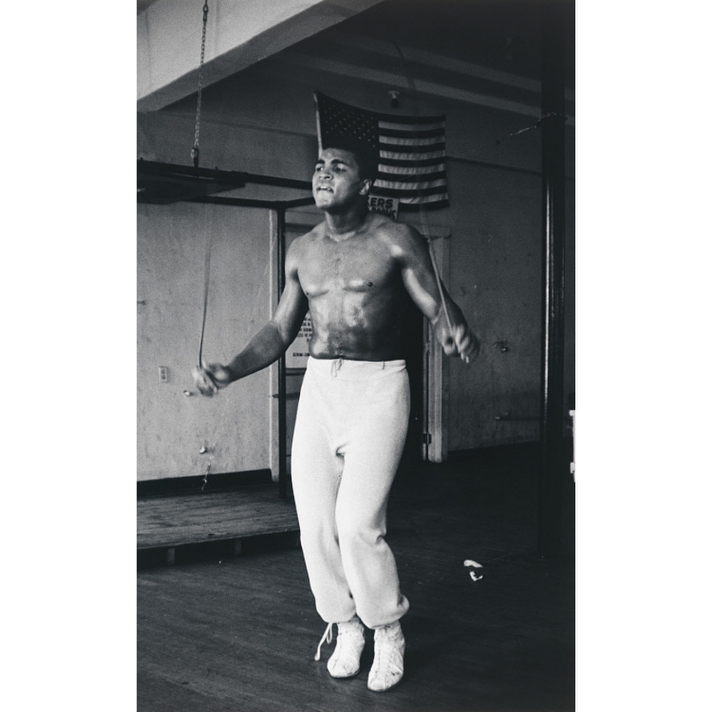Muhammad Ali by Gordon Parks, 1966.
Source: National Portrait Gallery
1963
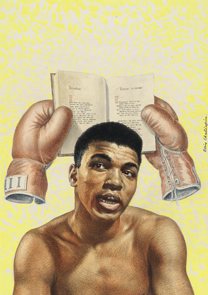Painting of Muhammad Ali by Boris Chialapin, 1970.
Source: National Portrait Gallery
1964
Press kit for Sonny Liston versus Cassius Clay Championship Fight.
Source: National Museum of African American History and Culture
Ticket for World Heavyweight Championship fight of Sonny Liston vs. Cassius Clay, 1964.
Source: National Museum of African American History and Culture
Official souvenir program of the World Heavyweight Championship of
Sonny Liston versus Cassius Clay (Muhammad Ali).
Source: National Museum of African American History and Culture<
1966
When Ali returned to America, he produced one of the great visual performances of his career, stopping Cleveland ‘Big Cat’ Williams in three rounds: the "Ali shuffle" was unveiled.
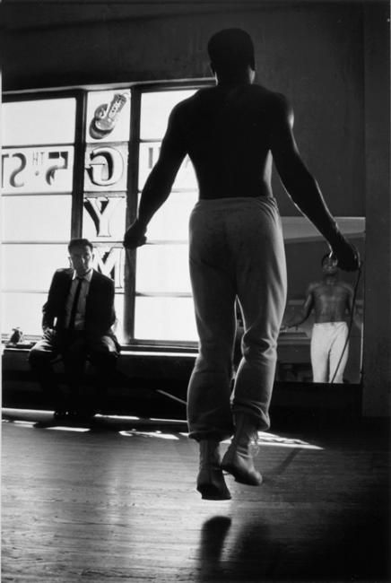Ali Jumping Rope by Gordon Parks, 1966.
Source: Smithsonian American Art Museum
1967
Ali refuses to join the U.S. Army citing his opposition to the Vietnam
War. He is subsequently barred from boxing and his title was stripped.
This poster features a prominent photographed of Muhammad
Ali at its center. Above and below the portrait are three
lines of very large lettering which read: [IT'S YOUR
RIGHT / VOTE / IT'S THE GREATEST EQUALIZER].
Source:National Museum of African American History and Cultures
How can I kill somebody when I pray five times a day for peace?
- Muhammad Ali in 1967 - -
1968 (suspended)
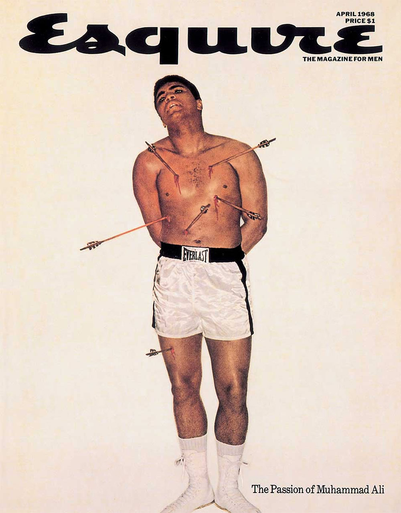Esquire, Vol. 69, No. 4.
Source: National Museum of African American History and Culture
As a result of refusing his army induction, Ali was arrested for draft evasion, and faced a potential 5 years in prison along with a 10,000 dollar fine.Source: External source (not Smithsonian)
{kind=link}
1970-1979
1970
The Supreme Court rules that Ali should not have been drafted because of religious beliefs.
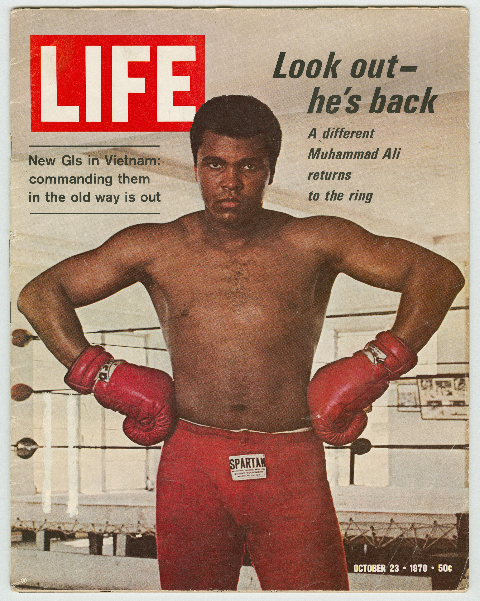“He’s Back,” reads the 1970 LIFE Magazine cover that touted
the return of Muhammad Ali, heavyweight boxing champion of the
world. Life Vol. 69 No. 17 - October 23, 1970.Source: National Museum of African American History and Culture
1971
“The Fight of the Century” takes place between Ali and Joe Frazier in New York’s Madison Square Garden.
Frazier won by a unanimous decision in 15 rounds.
The bout marked Ali’s first defeat of his pro career against Joe Frazier.
A black felt pennant with white lettering and a graphic of Muhammad Ali and
George Foreman fighting in a boxing rips. Source: National Museum of African American History and Culture
1973
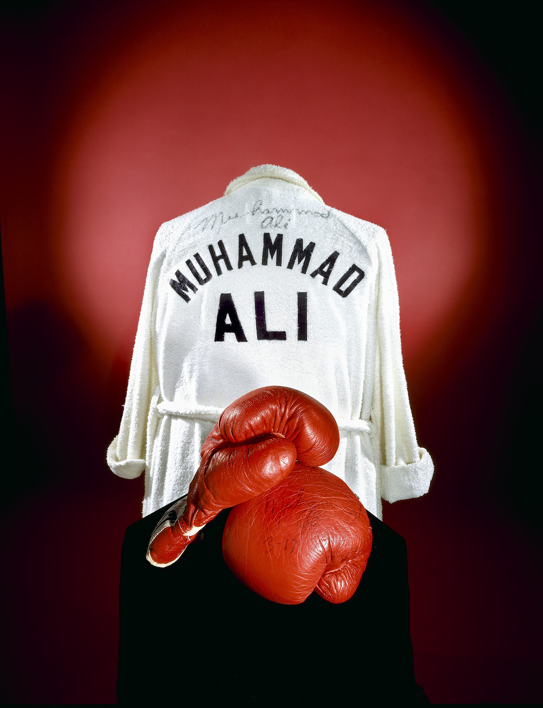Boxing Robe worn and donated by Muhammad Ali, 1974.
Source: National Museum of American History
1974
The famed “Rumble in the Jungle” fight takes place in Zaire (current DR Congo) and Ali knocks out George Foreman in the eighth round. Ali famously tires out Foreman using the “rope-a-dope” strategy.
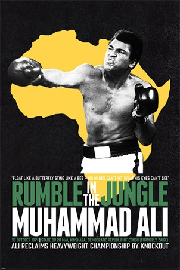Artistic rendition of poster during
Muhammad Ali's iconic "Rumble in the Jungle" fights.
Source: Exterior photo (non-Smithsonian)
Float like a butterfly, sting like a bee. His hands can't hit what his eyes can't see. Now you see me, now you don't. George thinks he will, but I know he won't.
- Muhammad Ali in 1975 -
1975
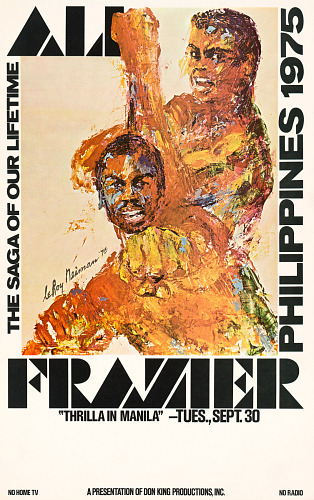"Thrilla in Manila" by LeRoy Neiman, 1975.
Source: National Portrait Gallery
It will be a killer and a chiller and a thriller when I get the gorilla in Manila.
— Muhammad Ali in 1974 -
1976

Muhammad Ali vs Joe Frazier, during "Fight of the Cenury", 1971.
Source: National Portrait Gallery
{kind=link}
1978
Ali loses to 1976 Olympic champion Leon Spinks in 15 rounds by a split decision.
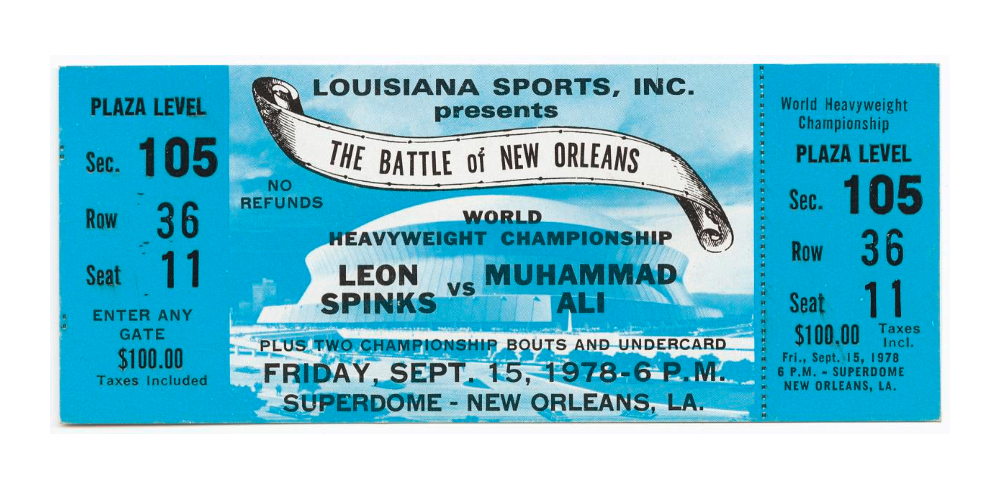Ticket to the World Heavyweight Championship boxing match between Muhammad Ali and Leon Spinks.
Source: National Museum of African American History and Culture
1979
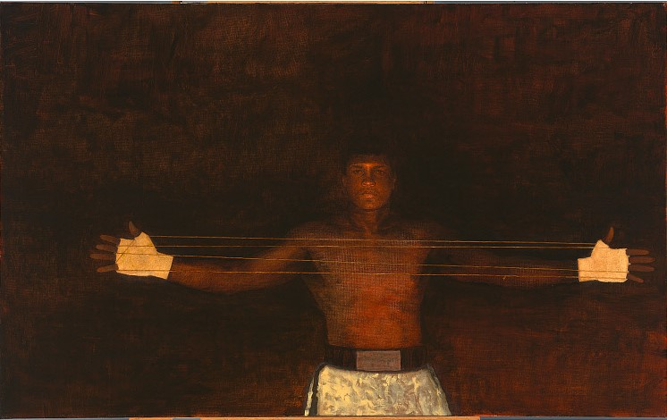Painting of "Cat's Cradle" by Henry C. Casselli (1981).
Source: National Portrait Gallery
Photo by Nelson Ndongala on Unsplash
1981-2016
1980
Amid concerns about his health, Ali comes out of retirement and loses to Holmes in Las Vegas.
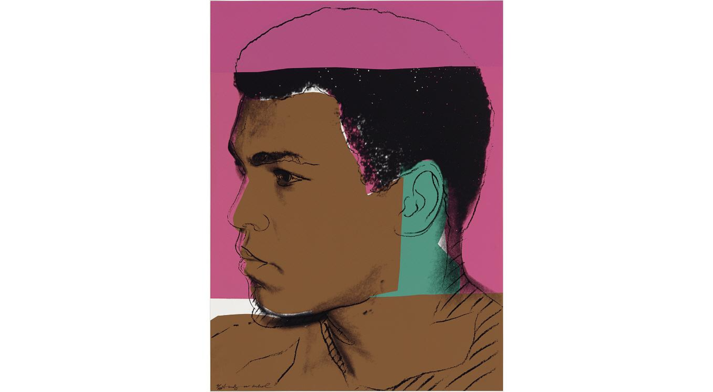Muhammad Ali by Andy Warhol, 1978.
Source: National Portrait Gallery
1981
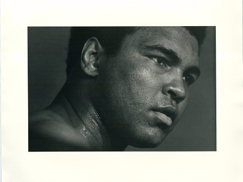Heavyweight champion Muhammad Ali, after a workout, at a press
opportunity, suburban Maryland, April, 1976.
Source: National Museum of American History
I suffered and sacrificed more than I ever did. There’s nothing left for me to gain by fighting.
- Muhammad Ali in 1981 - -
1982-2016
New Beginnings
Throughout his life, Ali turned his attention to philanthropy and making
life better for others.
He supported Parkinson's research and became active in the
Special Olympics and the Make a Wish Foundation.
Muhammad Ali by Rick Chapman, 2002.
Source: National Portrait Gallery